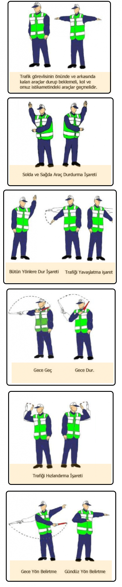

Trafik Polisinin Haraketleri ve Trafik Işıkları

Trafik polisinin duruş ve pozisyonuna göre, polis hazırolda veya kollarını açmış ise trafik polisinin ön ve arka
kısmı trafiğe kapalı, sağ ve sol tarafı trafiğe açıktır.
Trafik polisi elinin birini havaya kaldırmışsa bütün yollar trafiğe kapalıdır.
IŞIKLI TRAFİK İŞARET CİHAZLARI
- Kırmızı ışık: Yolun trafiğe kapalı olduğunu gösterir.
Aksine bir işaret yoksa, durup beklenir.
- Sarı ışık: Uyarı anlamındadır. Kırmızı ışıkla birlikte
yanarsa hazırlan yol trafiğe açılmak üzeredir. Yeşil ışıkla birlikte yanarsa yol trafiğe kapanmak üzeredir.
- Yeşil ışık: Yolun trafiğe açık olduğunu gösterir.
- Fasılalı ışık: Kırmızı ise dur, sarı ise dikkatli geç anlamındadır.
- Yazılı ve sesli ışık: Araç trafiğine göre yaya trafiğini düzenler ve yayalara hitap eder.